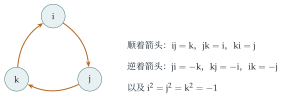

STEP III 1993，第 5 题
继续之前，请先阅读题目（原题为英文）。题目载于 STEP Support Programme 的题目资料库： step.maths.org/questions/93-s3-q5
引子
1843 年 10 月 16 日，哈密顿（William Rowan Hamilton）与妻子沿着都柏林的皇家运河散步时，苦思多年的问题忽然灵光一闪，有了答案。他一直想仿照复数把一对对的数相乘那样，把三个一组的数相乘，却屡试屡败。他突然看出，答案需要的是四个数，而且乘法的次序不可调换：\(ij \neq ji\)。他把这些法则刻在布鲁穆桥（Brougham Bridge）的石头上： \[\mathrm{i}^2 = \mathrm{j}^2 = \mathrm{k}^2 = \mathrm{ijk} = -1.\] 这就是四元数（quaternions）。本题用复数对把四元数构造出来，并在其中找到一个只有八个元素、乘法带点扭曲的小群。时至今日，每一款电脑游戏、每一部飞行模拟器、每一套太空船导航系统，都用四元数来描述三维空间中的旋转。
动笔之前
群的各项定义见 第 6.6 节。这里再补充两个用语：群中元素 \(g\) 的阶（order），是指使 \(g^n = e\) 成立的最小正整数 \(n\)；若两个群之间存在一个保持运算的一一对应，则称这两个群同构（isomorphic），也就是说，它们是“换了标签的同一个群”。
把数对 \((z_1, z_2)\) 看成代表一个“数”\(z_1 + z_2\mathrm{j}\)，其中 \(\mathrm{j}\) 是一个新符号，满足 \(\mathrm{j}^2 = -1\)，并且对任意复数 \(w\) 有 \(\mathrm{j}w = w^*\mathrm{j}\)。试用这些法则计算 \((z_1 + z_2\mathrm{j})(w_1 + w_2\mathrm{j})\)。得出的是否就是 \(\circ\) 的公式？
\((z_1 + z_2\mathrm{j})(w_1 + w_2\mathrm{j}) = z_1w_1 + z_1w_2\mathrm{j} + z_2\mathrm{j}w_1 + z_2\mathrm{j}w_2\mathrm{j} = z_1w_1 + z_1w_2\mathrm{j} + z_2w_1^*\mathrm{j} + z_2w_2^*\mathrm{j}^2\)，即 \((z_1w_1 - z_2w_2^*) + (z_1w_2 + z_2w_1^*)\mathrm{j}\)。答案是肯定的：运算 \(\circ\) 其实就是乔装了的四元数乘法。
逐步解题
阶段 1 借助矩阵证明结合律
直接验证 \((a \circ b) \circ c = a \circ (b \circ c)\)，计算十分冗长。其实有更巧妙的方法。
把 \((z_1, z_2)\) 对应到复矩阵 \(M = \begin{pmatrix} z_1 & z_2 \\ -z_2^* & z_1^* \end{pmatrix}\)。矩阵乘积 \(M(z_1, z_2)\,M(w_1, w_2)\) 的第一行是甚么？
乘积的第一行是 \(\bigl(z_1w_1 - z_2w_2^*,\ z_1w_2 + z_2w_1^*\bigr)\)，正好是 \((z_1, z_2)\circ(w_1, w_2)\)；第二行是 \(\bigl(-(z_1w_2 + z_2w_1^*)^*,\ (z_1w_1 - z_2w_2^*)^*\bigr)\)，所以乘积仍具有同样的特殊形式。因此 \(M(a \circ b) = M(a)M(b)\)。矩阵乘法满足结合律（associativity），而 \(M\) 是一对一的（从第一行便可读出 \(z_1\)、\(z_2\)），所以 \(\circ\) 满足结合律。■
阶段 2 不满足交换律
\((0, 1)\circ(\mathrm{i}, 0) = (0 \cdot \mathrm{i} - 1 \cdot 0,\ 0 \cdot 0 + 1 \cdot \mathrm{i}^*) = (0, -\mathrm{i})\)，但 \((\mathrm{i}, 0)\circ(0, 1) = (0, \mathrm{i})\)。所以 \(\circ\) 不满足交换律（commutativity）。
四个特殊乘积可由定义直接得出： \[\begin{aligned} (z, 0)\circ(w, 0) &= (zw, 0), & (z, 0)\circ(0, w) &= (0, zw), \\ (0, z)\circ(w, 0) &= (0, zw^*), & (0, z)\circ(0, w) &= (-zw^*, 0). \end{aligned}\]
阶段 3 八个元素的群
用四元数的记法，\(A = 1\)，\(C = \mathrm{i}\)，\(B = \mathrm{j}\)，\(D = \mathrm{i}\mathrm{j} = \mathrm{k}\)，而 \(E, G, F, H\) 则分别是它们的相反数。\(S_1\) 的每个元素都具有 \((u, 0)\) 或 \((0, u)\) 的形式，其中 \(u \in \{1, \mathrm{i}, -1, -\mathrm{i}\}\)。
利用四个特殊乘积，证明 \(S_1\) 是封闭的。单位元是甚么？
由四个特殊乘积可知，两个形如 \((u, 0)\) 或 \((0, u)\) 的元素相乘，结果仍是这两种形式之一，其第一个或第二个分量为 \(uv\)、\(uv^*\) 或 \(-uv^*\)。由于 \(\{1, \mathrm{i}, -1, -\mathrm{i}\}\) 在乘法、取共轭及取相反数之下都封闭（closed），乘积仍在 \(S_1\) 之内。单位元（identity）是 \(A = (1, 0)\)：\((1, 0)\circ(w_1, w_2) = (w_1, w_2)\)，而且 \((w_1, w_2)\circ(1, 0) = (w_1, w_2)\)。
求出每个元素的阶和逆元。
\(A\) 的阶为 \(1\)。\(E\circ E = (-1, 0)\circ(-1, 0) = (1, 0)\)，所以 \(E\) 的阶为 \(2\)。对于 \(C = (\mathrm{i}, 0)\)：\(C\circ C = (-1, 0) = E\)，所以 \(C\) 的阶为 \(4\)，而 \(C^{-1} = C^3 = E\circ C = G\)。对于 \(B = (0, 1)\)：\(B\circ B = (-1 \cdot 1^*, 0) = (-1, 0) = E\)，所以 \(B\) 的阶为 \(4\)，而 \(B^{-1} = F\)。同理，\(D\circ D = (-\mathrm{i}\cdot\mathrm{i}^*, 0) = (-\mathrm{i}\cdot(-\mathrm{i}), 0) = (-1, 0) = E\)，所以 \(D\) 的阶为 \(4\)，逆元（inverse）为 \(H\)。至于 \(G\)、\(F\)、\(H\)，它们分别是 \(C\)、\(B\)、\(D\) 的逆元，阶同样为 \(4\)。总结如下：
| 元素 | \(A\) | \(B\) | \(C\) | \(D\) | \(E\) | \(F\) | \(G\) | \(H\) |
|---|---|---|---|---|---|---|---|---|
| 逆元 | \(A\) | \(F\) | \(G\) | \(H\) | \(E\) | \(B\) | \(C\) | \(D\) |
| 阶 | \(1\) | \(4\) | \(4\) | \(4\) | \(2\) | \(4\) | \(4\) | \(4\) |
既有封闭性和结合律（第 1 步），又有单位元和逆元，\(S_1\) 是一个群。■ 这个群称为四元数群（quaternion group）\(Q_8\)。
阶段 4 一个子群
\(\{A, B, E, F\} = \{1, \mathrm{j}, -1, -\mathrm{j}\}\) 由 \(B\) 的各次幂组成：\(B^1 = B\)，\(B^2 = E\)，\(B^3 = F\)，\(B^4 = A\)。所以它是封闭的，并且包含各元素的逆元：这是一个子群（subgroup），而且是阶为 \(4\) 的循环群（cyclic group）。矩阵 \(J = \begin{pmatrix} 0 & 1 \\ -1 & 0 \end{pmatrix}\) 满足 \(J^2 = -I\)，\(J^3 = -J\)，\(J^4 = I\)，所以它同样生成一个阶为 \(4\) 的循环群。对应 \(B^k \leftrightarrow J^k\) 是一个同构。■ （事实上，\(J\) 正是 \(M(0, 1)\)，即 \(B\) 所对应的矩阵。）
回顾
用矩阵来表示。结合律直接验证起来十分费劲，这里却可从矩阵乘法继承过来。
找出公式背后的结构。古怪的运算 \(\circ\) 原来就是四元数乘法，看穿了这一点，一切都变得容易。
阶和逆元刻划了一个群。单看各元素的阶，已可见 \(Q_8\) 与别不同：一个阶为 \(2\) 的元素，六个阶为 \(4\) 的元素。
背后的数学
实数构成一个一维的数系，在其中可以做加法、乘法和除法；复数则构成一个二维的数系。哈密顿的四元数是四维的，除法依然可行，但乘法不再满足交换律（图 6.7.1）。1878 年，弗罗贝尼乌斯（Ferdinand Frobenius）证明了 \(\mathbb{R}\)、\(\mathbb{C}\) 和 \(\mathbb{H}\)（取自 Hamilton 的首字母）这三者，是实数域上仅有的、乘法满足结合律的有限维“可除代数”（division algebras）。如果放弃结合律，但保留一个可乘的大小，即 \(|xy| = |x|\,|y|\)，一如实数、复数和四元数那样，那就恰好还多一个：八维的八元数（octonions），由 John Graves 和凯莱（Arthur Cayley）在 1840 年代发现。赫维兹（Adolf Hurwitz）于 1898 年证明，这类数系就只有这四个。（若不设关于大小的条件，还有其他更古怪的非结合可除代数，但 1958 年一条由博特（Raoul Bott）、米尔诺（John Milnor）和 Michel Kervaire 得出的深刻定理指出，任何有限维实可除代数的维数必为 \(1\)、\(2\)、\(4\) 或 \(8\)。）

三维空间中的旋转
模（modulus）为 \(1\) 的四元数描述三维空间的旋转：绕单位轴 \(\mathbf{u}\) 转过角度 \(\theta\) 的旋转，对应于 \(q = \cos\frac\theta2 + \sin\frac\theta2(u_1\mathrm{i} + u_2\mathrm{j} + u_3\mathrm{k})\)，它作用于向量 \(\mathbf{v}\)（写成 \(v_1\mathrm{i} + v_2\mathrm{j} + v_3\mathrm{k}\)）的方式是 \(\mathbf{v} \mapsto q\mathbf{v}q^{-1}\)。旋转的复合就是四元数的相乘。这比使用矩阵或角度更有效率，数值上也更稳定，而且避开了“万向节锁”（gimbal lock）：那是失去一个自由度的现象，当年阿波罗（Apollo）太空人使用以陀螺仪为本的导航系统时，就不得不设法绕过这个问题。半角 \(\frac\theta2\) 也透露出一点深刻的端倪：旋转 \(360^\circ\) 得到的是 \(q = -1\)，而不是 \(1\)，物理学家在电子的行为（自旋，spin）中正好看到这个事实。
四平方和
四元数的模是可乘的，\(|pq| = |p||q|\)，与复数的模一样。把它展开写出，便得到欧拉（Euler）的四平方恒等式（four-square identity）：两个四平方和之积，本身也是一个四平方和。这正是拉格朗日（Lagrange）定理的关键一步，该定理指出每个正整数都是四个平方数之和；我们会在 第 7.8 节 证明这条定理，它是 第 1.6 节 中二平方和结果的四维近亲。
思维技巧
如果一个抽象的运算难以推理，就找一个具体的模型（例如矩阵），让它在其中变成熟悉的运算。
这样，结合律之类的性质便不费吹灰之力。这个想法，即把群表示为矩阵来研究，后来发展成一门庞大而优美的学科：表示论（representation theory）。
延伸练习
哈密顿的法则。利用数对，验证 \(C\circ B = D\) 及 \(B\circ C = H\)，即 \(\mathrm{ij} = \mathrm{k}\) 及 \(\mathrm{ji} = -\mathrm{k}\)。
只有一个阶为 \(2\) 的元素。证明 \(E = -1\) 是 \(Q_8\) 中唯一阶为 \(2\) 的元素。由此推断 \(Q_8\) 与正方形的对称群（它有五个阶为 \(2\) 的元素）并不同构。
四平方和。证明 \(\det M(z_1, z_2) = |z_1|^2 + |z_2|^2\)。利用 \(\det(M_1M_2) = \det M_1\det M_2\)，推断两个四平方和之积是一个四平方和。
子群。找出 \(Q_8\) 的所有子群。证明除了 \(\{A\}\) 之外，每个子群都包含 \(E\)，并证明 \(Q_8\) 是它三个阶为 \(4\) 的循环子群的并集（试与 第 6.6 节 比较）。
延伸阅读
John Conway & Derek Smith, On Quaternions and Octonions（A. K. Peters）。讲述四元数和八元数的几何与算术。程度较深，但引人入胜。
John Baez,“The octonions”，Bulletin of the American Mathematical Society 39 (2002)；网上亦可免费阅览。一篇精彩的综述；引言部分现在就读得懂。
Andrew Hanson, Visualizing Quaternions（Morgan Kaufmann）。讲述以四元数处理旋转，并介绍其在电脑图像方面的应用。